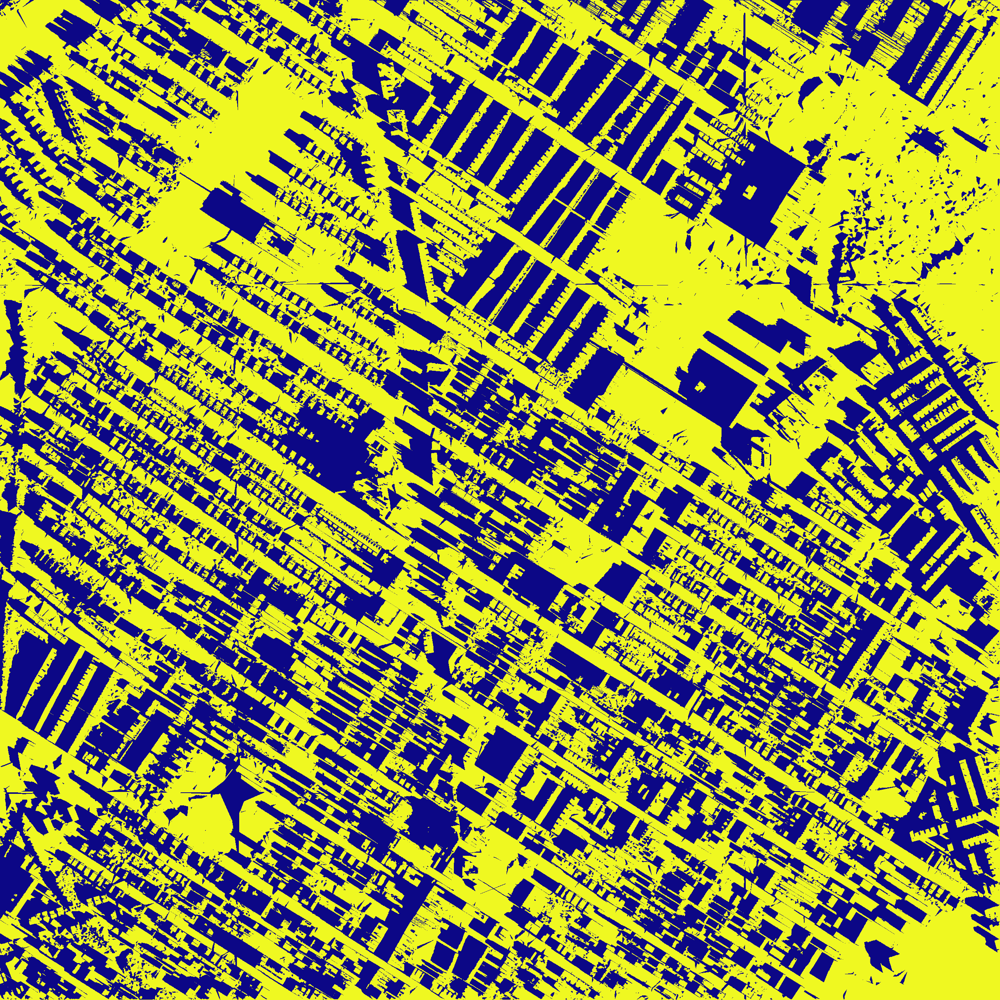
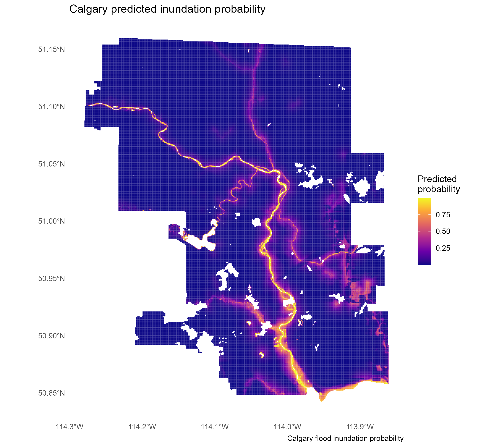
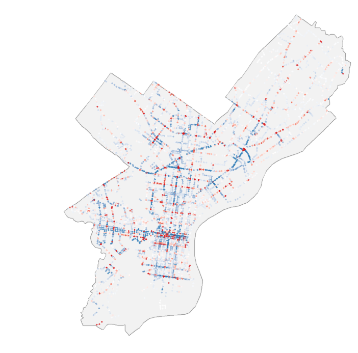
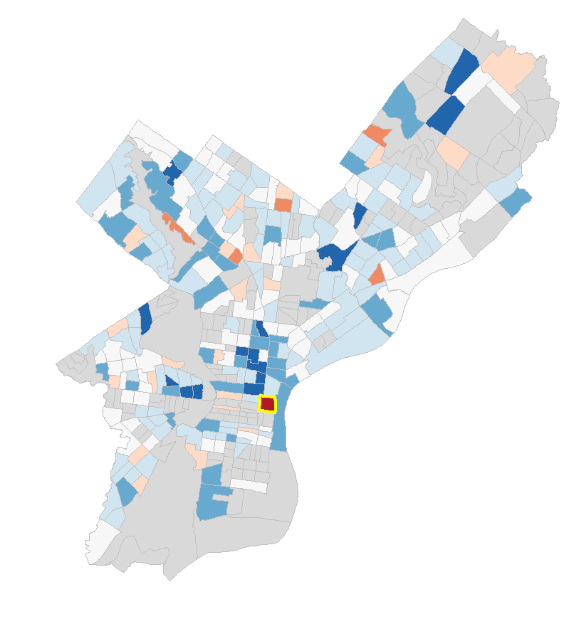
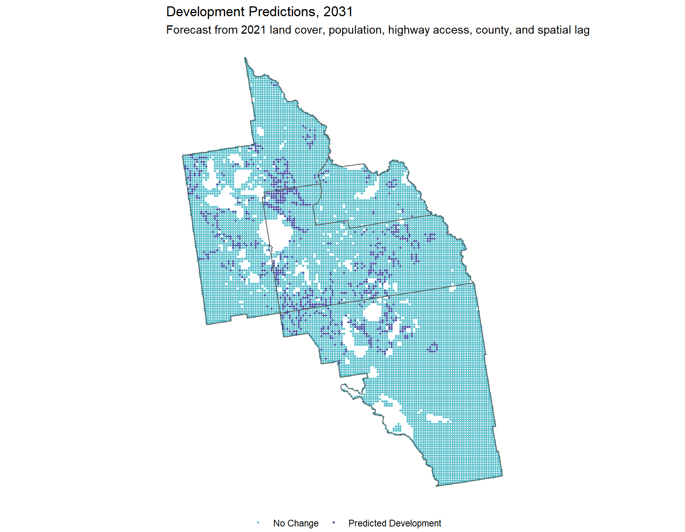
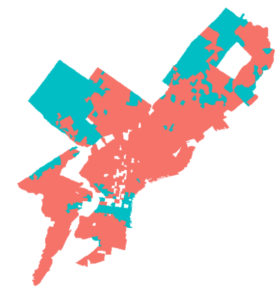
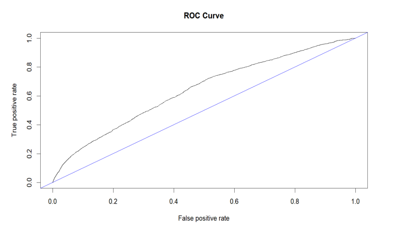

Urban Shadow Analysis using GPU Programming
GPU-accelerated solar-shadow modeling across an urban digital surface model throughout the day.
View projectSelected work / 2025-26
01-11 / Project archive

GPU-accelerated solar-shadow modeling across an urban digital surface model throughout the day.
View project
Terrain, hydrology, and built-environment conditions modeled as spatial risk.
View projectChallenges and practical cooling strategies for a changing urban climate.
View StoryMap
Land use, mobility, and redevelopment compatibility around Philadelphia's stadium district.
View project
Modeling weekday boardings by stop to understand transit demand across the city.
View project
Reading home values through parcel, neighborhood, and spatial patterns.
View project
A spatial forecast of urban growth across the Orlando metropolitan area.
View projectA spatial analysis of where consumer debt-related legal needs are concentrated.
View StoryMap
Grouping census block groups by shared housing and socioeconomic characteristics.
View paper
Examining factors associated with alcohol-involved crashes through predictive modeling.
View paper
Comparing spatial regression approaches for neighborhood-scale housing patterns.
View paper